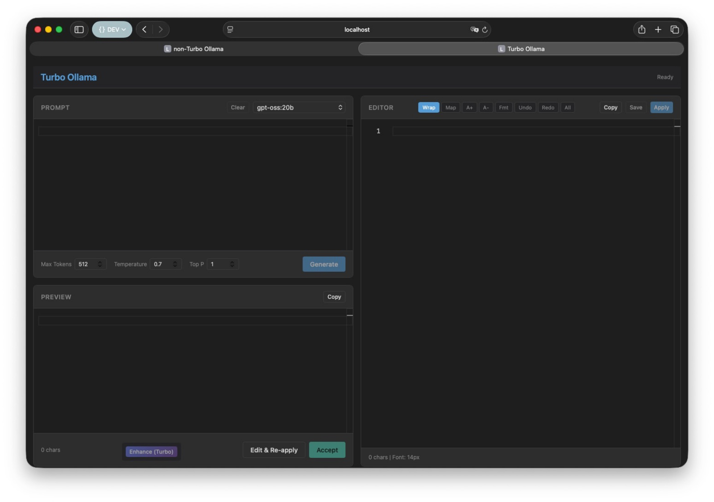

Ollama Turbo Quantは、turbo-quantが提供するベクトル量子化機能（符号化、デコード等）を使って、Ollamaからの出力を後処理できるローカルLLM支援ツールです。
Ollama Turbo Quantは、ローカルLLM（Ollama）との対話を支援するWebツールです。turbo-quantライブラリのベクトル量子化機能を活用し、LLMレスポンスの変換・圧縮・品質改善を実現します。

ポート: 3000
Ollamaとの連携のみ
ポート: 3001
Ollama + Turbo-Quantによるレスポンス処理
# non-Turbo起動（http://localhost:3000）
./ready.sh
# Turbo起動（http://localhost:3001）
./ready.sh turbo詳細な使い方は USAGE.md を参照してください。
MIT
watanabe3tipapa/ollama-turbo-quant-pe